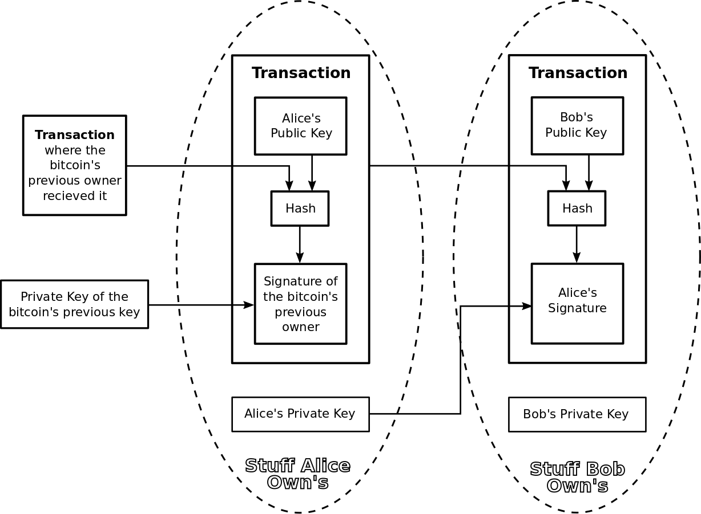
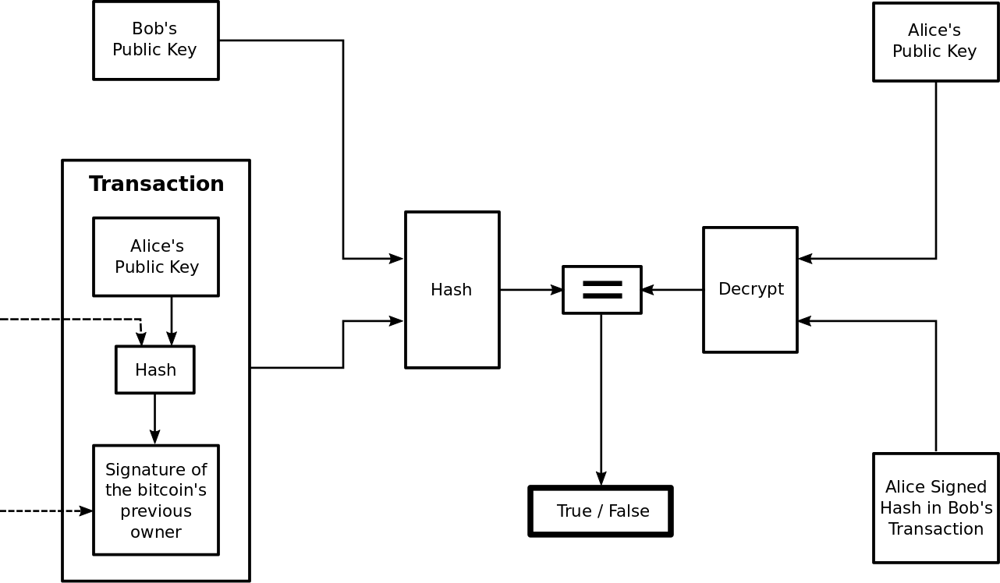
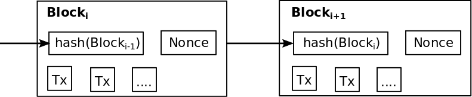
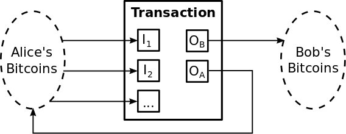

Crypto Notes
The goal of these notes is to serve as a record of my own understanding of crypto currencies and related concepts. I find writing formal notes forces me to confront gaps in my understanding. I personally do not invest in crypto currencies as I cannot afford to lose the money nor I do not suggest that anyone else should invest in crypto currencies except for educational purposes. What interests me about crypto currencies is not so much their value as their relative success as persistent distributed applications. These notes no doubt reflect this interest.
I had hoped that GitHub Pages had some great whizzbang plug and play templates which would make my notes look pro! Not so much, so bear with me as I refine their presentation.
Preliminary Concepts
Hash Function
A hash function is a function that,- Maps a message $m$ of arbitrary size to a fixed size hash value, $hash(m)$.
- Scrambles the information in $m$ such that the hash functions hash value is uniformly distributed across its possible values.
- Is fast to compute.
- Is deterministic.
- A hash function minimizes the probability that two distinct messages $m_1$ and $m_2$ have the same hash value. Which can be formally expressed as minimizing the probability that, $$ m_1 \neq m_2 \hspace{2em} \text{and} \hspace{2em} hash(m_1) = hash(m_2) $$
An example of a simple hash function is,

Assuming the input message is a string of alphabetic characters this simple hash function outputs an integer between 0 and 4. So if we input messages ALICE and BOB into this hash function we get hashes 0 and 4 respectively as shown in the table below.
| Input | Current Char. | Char. to Dec. | (+) | mod 5 | Output |
|---|---|---|---|---|---|
| None | None | None | None | None | None |
| ALICE | A | 1 | 1 | 1 | |
| L | 12 | 13 | 3 | ||
| I | 9 | 12 | 2 | ||
| C | 3 | 5 | 0 | ||
| E | 5 | 10 | 0 | 0 | |
| BOB | B | 2 | 2 | 2 | |
| O | 15 | 17 | 2 | ||
| B | 2 | 4 | 4 | 4 |
Notation:
$(+)$ denotes addition
$mod$ denotes the modulo operation
Sources:
en.wikipedia.org/wiki/Hash_function
Cryptographic Hash Function
The fundamental difference between a hash function and a cryptographic hash function is that it is practically impossible to invert a cryptographic hash function. This is because in addition to being a hash function a cryptographic hash function is a one-way function. In life there are many one-way functions. For instance it is easy to light a match, but once lit it is practically impossible to return it to its initial state. In the example of a hash function above, the inability to invert it would imply that given the hash value $0$ it is practically impossible to guess that it was derived from the message ALICE. This is clearly not true which is why the hash function above is not a cryptographic hash function. Getting more technical a cryptographic hash function should satisfy the following properties.- Pre-image resistance: Given a hash value $h$ it should be difficult to find a message $m$ such that, $$ h = hash(m) $$
- Second pre-image resistance: Given an input $m_1$, it should be difficult to find a different input $m_2$ such that, $$ hash(m_1) = hash(m_2) $$
- Collision resistance: It should be difficult to find two different messages $m_1$ and $m_2$ such that. $$ hash(m_1) = hash(m_2) $$
Sources:
en.wikipedia.org/wiki/Cryptographic_hash_function
Symmetric-Key Cryptography
To motivate public-key cryptography I’m going to introduce symmetric key cryptography. In symmetric key cryptography the same secret key is used to both encode and decode a message. One of the simplest symmetric key ciphers is the Caesar shift cipher. Given a message text $m$ and secret key $k$, the message with spaces removed and letters replaced by the integers $1$ through $26$ is encoded one letter at a time as $$ c = (m+k)~mod~26 $$ and is decoded as $$ \begin{align} (c-k)~mod~26& = ((m+k)~mod~26 -k)~mod~26\\ &= (m+k)-k)~mod~26\\ &= m~mod~26\\ &= m \end{align} $$ For example say Alice wants to send Bob the message $$ bewareofbrutus $$ using a Caesar shift cipher and the shared secret key $k=1$. The corresponding encoded message or ciphertext is $$ cfxbsfpgcsvuvt $$ as each character in the message is replaced by the character $1$ space to its left in the alphabet, wrapping around at ‘z’. Bob knowing $k=1$ can then decode this ciphertext by replacing each character with the character $1$ space to its right, wrapping around at ‘a’.The Caesar shift cipher is a very simple encryption scheme. Practical symmetric cryptography schemes like Advanced Standard Encryption (AES) are much more complicated. But the key takeaway is that for Alice and Bob to communicate via a symmetric cryptography scheme they must share a secret key.
Now let's say Alice and Bob have a friend Tom. If Alice wants to communicate privately with Bob they must share a secret key $k_{AB}$ and if Alice wants to communicate privately with Tom they must share a secret key $k_{AT}$. Finally if Bob wants to communicate privately with Tom they must share a secret key $k_{BT}$. This is only three secret keys but say there are $n$ people who want to communicate then under a symmetric cryptography scheme each user would have to have $n-1$ unique secret keys and the entire cryptography scheme would have to generate and maintain, $$ \frac{n (n-1)}{2} $$ secret keys. So if $n$ is earth’s population which is about $7.5 \times 10^9$ that works out to about $2.8 \times 10^{19}$ secret keys, which becomes a challenge to generate and maintain.
Of course most people don’t communicate with every other person on earth. So why is it necessary to generate all $\frac{n (n-1)}{2}$ keys? The short answer is that it is not necessary thanks to public-key cryptography. But let’s give an example where it might otherwise be necessary to generate all these keys.
Say Alice, Bob, and Tom want to communicate privately with one another. How do they distribute keys $k_{AB}$, $k_{AT}$, and $k_{BT}$? Perhaps Alice chooses $k_{AB}$ and $k_{AT}$ and gives them to Bob and Tom in super secret meet ups. But clearly if Alice wants to communicate with $n$ people, meeting all of them in person to give them a secret key is not practical. So instead Alice mails Bob and Tom their secret keys, eliminating the need for super secret meet ups. But Tom is curious about Alice’s private communications with Bob, so Tom intercepts the letter and copies the secret key $k_{AB}$ before forwarding it to Bob. Tom is then able to read all of Alice and Bob’s communications without either of them knowing that he is doing so. This of course undermines the entire reason for setting up a cryptographic communication scheme in the first place.
So instead say Alice, Bob, and Tom appeal to a trusted party, Server. Server generates all the secret keys and is always available for super secret meet ups to hand off the keys. The first problem with this distribution scheme is that in the worst case Server will have to generate and maintain $\frac{n(n-1)}{2}$ keys to make sure that he doesn’t accidentally distribute a key to more than one pair of users. The second problem is can Alice, Bob, and Tom really trust Server? Server can read everyone's messages. Again this seems to undermine the entire reason for using a cryptographic communication scheme.
Public-key cryptography while much more computationally intensive than symmetric key cryptography avoids the problem of distributing secret keys entirely. In fact public-key cryptographic schemes are often used to set up secure communication channels via which individuals initially exchange secret keys for symmetric key cryptography schemes.
Sources:
en.wikipedia.org/wiki/Caesar_cipher
Public-key cryptography
So how does public-key encryption work? Imagine for a moment that Alice and Bob each generate a pair of keys for themselves, a public key $k_{pub}$ which they send to anyone who requests it and a private key $k_{pri}$ which is known only to them. If Alice wants to send Bob an encrypted message $m$ she encrypts it with Bob’s public key $k_{b,pub}$. $$ c = encrypt(m,k_{b,pub}) $$ Bob on receiving $c$, decrypts it using his private key $k_{b,pri}$. $$ m = decrypt(c,k_{b,pri}) $$An elegant solution to the problem of key distribution. Why did it take until the 1970s for James H. Ellis to discover public-key cryptography when symmetric key cryptography has been around for thousands of years? Well it turns out that choosing the right public and private key pairs and the right encryption and decryption algorithms so that if an attacker knowns $k_{pub}$, $encrypt(*)$, $decrypt(*)$, and ciphertext $c$, they cannot easily guess private key $k_{pri}$ or message $m$ is non-trivial.
To see this I will explain how the Rivest–Shamir–Adleman (RSA) public-key cryptosystem works. But first let’s introduce the modular congruence. Modular congruence is a relation denoted as $$ a \equiv b~(mod~n) $$ Where $a-b = kn$ for some integer $k$. For instance $$ \begin{align} 2 &≡ 2~(mod~5)\\ 7 &≡ 2~(mod~5)\\ 12 &≡ 2~(mod~5)\\ etc. \end{align} $$ This is slightly different than stating equality after the modulo operation. For instance, $12~mod~5 = 2$.
The basic idea of RSA is to select three large integers $e$, $d$, and $n$. Then given a message text $m$ convert it into binary and then into its corresponding integer representation. If $m \geq n$ slice up the original message until $0 \leq m < n$.
The public key is $e$ and $n$ and the encryption function is defined as $$ c \equiv m^e~(mod~n) $$ The private key is $d$ and the decryption function is defined as $$ \begin{align} c^d~(mod~n) &= (m^e~(mod~n))^d~(mod~n)\\ &= m^{ed}~(mod~n)\\ &\equiv m \end{align} $$
To understand why the $m$ is congruent with $m^{ed}~(mod~n)$ requires understanding how $n$, $e$, and $d$ are selected. Trappe summarized this selection processes as follows
- Choose secret primes $p$ and $q$ and compute $n = pq$.
- Choose $e$ with $gcd(e,(p-1)(q-1)) = 1$.
- Compute $d$ such that $de ≡ 1~(mod~(p-1)(q-1))$.
Now although it can be shown to be unnecessary, assume $gcd(m,n) = 1$. Then Euler’s Theorem gives $$ m^{\phi(n)} \equiv 1~(mod~n) $$ where $\phi(n)$ is the Euler totient function and given $n = pq$ it follows that $\phi(n) = (p-1)(q-1)$.
Now recall we also selected $d$ such that $de ≡ 1~(mod~(p-1)(q-1))$. Therefore it follows that $de = 1 + k\phi(n)$ for some integer $k$ and, $$ \begin{align} c^d &\equiv (m^e)^d~(mod~n)\\ &\equiv m^{1+kφ(n)}~(mod~n)\\ &\equiv m(m^{\phi(n)})^k~(mod~n)\\ &\equiv m(1)^k~(mod~n) \hspace{4em} \text{from Euler’s Theorem}\\ &\equiv m \end{align} $$
Now why is RSA secure? First it is hard to guess the message $m$ given ciphertext $c=m^e$. Second given $e$ and $n$ its hard to compute $d$ because $n$ is hard to factor into $p$ and $q$. Where by hard we mean there is no known algorithm that can factor all $b$-bit integers in $O(b^k)$ time or less for some constant $k$.
Notation:
$O(*)$ is Big $O$ notation
Sources:
en.wikipedia.org/wiki/Public-key_cryptography
en.wikipedia.org/wiki/Modular_arithmetic
en.wikipedia.org/wiki/RSA_(cryptosystem)
en.wikipedia.org/wiki/Integer_factorization
en.wikipedia.org/wiki/Big_O_notation
Introduction to Cryptography with Coding Theory by Wade Trappe and Lawrence Washington
Digital Signatures
Once you understand the concepts of public-key cryptography digital signatures are pretty straight forward. Say Alice wants to send Bob a message $m$ and she doesn’t care who reads it, she just wants Bob to know it was from her. Then she would sign the message with her private key $d$. Anyone with Alice’s public key $(e,n)$ could of course recover the message but they would also know that only Alice had the secret $d$ with which the message was signed, therefore it must be from her. Under the RSA cryptosystem this digital signature has the form, $$ m_{signed} = m^d $$
Signature verification is the same procedure as public-key encryption. $$ (m_{signed})^e \equiv (m^d)^e~(mod~n)\\ \equiv m^{ed}~(mod~n)\\ \equiv m $$
Sources:
en.wikipedia.org/wiki/Public-key_cryptography
en.wikipedia.org/wiki/Modular_arithmetic
Introduction to Cryptography with Coding Theory by Wade Trappe and Lawrence Washington
Bitcoin and Blockchain
Satoshi Nakamoto defines a bitcoin as a chain of digital signatures. This chain may be one or more transactions long and is constructed by transferring the bitcoin from one owner to another.
What is a transfer in the bitcoin network? Lets say Alice owns a bitcoin which she wants to transfer to Bob. Alice transfers the coin by signing the hash of the previous transaction in which Alice received the bitcoin concatenated with the public key of the next owner, Bob. Alice’s digital signature in the transaction proves that she sent Bob the bitcoin and it is this very chain of digital signatures which Nakamoto uses to define a bitcoin above. See graphic below illustrating Alice sending Bob a bitcoin transaction.
and the following graphic transaction depicts the process of verifying the transaction Alice sent Bob.
The problem with the bitcoin network as outlined so far is that Alice could double spend, taking the same bitcoin she sent to Bob and sending it to Tom. In a centralized electronic currency preventing double spends can be accomplished by a trusted party that verifies all transactions. To verify transactions without a centralized trusted party verifying transactions, all transactions must be announced publicly and the verification is accomplished by the majority of participants in the bitcoin system agreeing on the networks transaction history. For instance once the network has agreed that Alice has not double spent the bitcoin she sent Bob, the payment is finalized and Bob receives Alice’s bitcoin.
Essentially what the bitcoin network is doing in agreeing that a coin has not been previously spent, is agreeing the time stamp for when that bitcoin was sent to a payee and that the bitcoin had not been previously spent by the sender. In a centralized network one could choose a single node to announce the transaction timestamps. However being a distributed network bitcoin cannot designate a node to announce timestamps. Instead the announcing node is selected randomly. If the random process by which the announcing node is selected is distributed then the network remains distributed. If additionally most nodes in the network agree with the announcement, then the network has also achieved distributed trust.
Satoshi Nakamoto calls this distributed random process of selecting an announcing node proof-of-work. The idea being that the probability of a node being selected to be an announcing node should be proportional to how invested a node is in the integrity of the bitcoin network or how much work that node has put into maintaining the networks integrity. To measure the work a node has done in maintaining the network each node is asked to present a proof-of-work.
What is this proof-of-work? The proof-of-work can be stated as follows. Given a hash function, $hash(*)$, find the message $m$ such that the hash value of $m$ begins with $x$ zeros. Say for instance $hash(*)$ outputs a $3$ bit hash value for any input $m$. The possible hash values are, $$ \begin{align} &000\\ &001\\ &010\\ &011\\ &100\\ &101\\ &110\\ &111 \end{align} $$
So if $x=1$ the probability that $hash(m)$ starts with $1$ zero is $\frac{1}{2}$. If $x=2$ the probability that $hash(m)$ starts with two zeros is $\frac{1}{4}$. So it follows that given an $n$ bit hash function and the probability of finding a hash value where the first $x$ digits are zero is $2^{-x}$ where $0 < x \leq n$. In other words every time $x$ increases by $1$, the proof-of-work gets twice as hard. The message $m$ being hashed is the proposed next block in the blockchain. This block contains a hash of the previous block, all of the transactions to be announced and a nonce (a number selected by the node). The nonce is incremented until a hash value of the block with the correct number of leading zeros is found. The difficulty of finding the proof-of-work is periodically adjusted by changing the value of $x$ such that on average a new bitcoin is announced every $10$ minutes or $6$ are announced every hour$^1$.
The node announcing the next block is random because it is the first node in the network to find the correct nonce to produce a proof-of-work. The probability that a given node produces a proof-of-work before any other node is proportional to the computational power of the node relative to the computational power of all the nodes in the bitcoin network. As producing a proof-of-work before any other node requires finding a nonce producing the x leading zeros before any other node, the faster a node can test a nonce the more likely this is to be the first to produce a proof-of-work.
Once a node has won the right to announce the next block of transactions by being the first to complete the proof-of-work, the node announces the new block and the transactions within, to the bitcoin network.

Notice that including the hash of the previous block in the new block creates a dependence chain, where the newest block depends on the contents of all previous blocks. This chain of dependence is what constitutes the blockchain.
The last block in the blockchain fixes the values of all previous blocks with the hash of the preceding block. This is important as Nakamoto describes because of the following properties of the bitcoin network.
- When a node adds a new block to the blockchain with a proof-of-work, if all transactions in the block are verified as not being double spends, the new block chain is instantly adopted by the network.
- The blockchain helps prevent attackers from being able to modify old transactions such that future double spends will not be detected.
Say Alice wants to modify $Block_i$ to $Block'_i$, Alice would have to modify all subsequent blocks $Block_j$ for $j > i$ because the modified blocks hash value does not equal the original blocks hash value, $$ hash(Block_i) \neq hash(Block'_i) $$ This changes the contents of all subsequent blocks $Block_j$ for $j > i$ in the blockchain with the modified block $Block'_i$. Therefore Alice must find a new nonce or proof-of-work for each block $Block_j$ for $j > i$ such that its hash value has $x$ leading zeros.
But why doesn’t Alice simply announce that the modified length $i$ blockchain with block $Block'_i$ is the legitimate blockchain? Why does Alice need to redo the proof-of-work for each node following $Block'_i$ in the blockchain? Because the legitimate blockchain is defined by the bitcoin network as the longest blockchain in the network. If Alice was able to modify block $Block_i$ to $Block'_i$ and construct the proof-of-work for all following blocks in the blockchain plus an additional block such that she was able to announce the longest blockchain her blockchain would be considered the legitimate blockchain by the bitcoin network.
It’s often said that an attacker such as Alice would need to control $51\%$ of the computational power in the bitcoin network in order to get a modified block accepted by the bitcoin network. This is an oversimplification as Nakamoto lays out. Say Alice sends Bob a bitcoin, the bitcoin network waits for the block $Block_i$ containing the transaction sending the bitcoin from Alice to Bob to be $z$ blocks deep in the blockchain. Now define
- $p =$ the probability that an honest node finds the next block in the blockchain
- $q =$ the probability that Alice finds the next block
- $q_z =$ the probability that Alice will ever catch up after modifying a block $z$ blocks deep in the blockchain. Where modeling this probability in terms of the Gambler’s Ruin problem $q_z$ can be explicitly formulated as $$ q_z = \left\{ \begin{align} &1 &if~ p \leq q\\ &(q/p)^z &if~ p > q \end{align} \right. $$
To see this assume Alice has started working on her modified blockchain containing modified block $Block'_i$ as soon $Block_i$ was announced. Also assume Alice’s progress is a Poisson distribution with expected value, $$ \lambda = z \left(\frac{q}{p}\right) $$
The probability that Alice will ever catch up after modifying a block $z$ blocks deep in the blockchain is $$ q_z = 1 - \sum_{k=0}^z \left\{ \begin{align} &(q/p)^{(z-k)} &if k \leq z\\ &1 &if k > z \end{align} \right\} $$ Solving the numerically it turns out that if $q=0.3$, $$ \begin{align} &z=5 &implies \hspace{2em} q_z = 0.177\\ &z=10 &implies \hspace{2em} q_z = 0.042 \end{align} $$ Or if Alice controls $30\%$ of the bitcoin networks computing power and the modified block that is $10$ blocks deep, Alice has more than a $4\%$ chance of successfully submitting her modified block $Block'_i$ to the blockchain. To mitigate this possibility the blockchain network considers a transaction unconfirmed until it is $z=6$ blocks deep$^2$.
At this point we have laid the foundation of the bitcoin network and Nakamoto outlines how it operates as follows,
- New transactions are broadcast to all nodes.
- Each node collects new transactions into a block.
- Each node works on finding a difficult proof-of-work for its block.
- When a node finds a proof-of-work it broadcasts the block to all nodes.
- Nodes accept the block only if all transactions in it are valid and not already spent.
- Nodes express their acceptance of the block by working on creating the next block in the chain using the hash of the accepted block as the previous hash.
One of the nice properties of the network outlined above is an inherent fault tolerance. In the off chance that two nodes release new blocks simultaneously such that neither new blockchain permeates the entire network, the blockchain that adds the next block first will be adopted by the network as it will be the longest blockchain. Also say for instance a transaction is not received by all nodes in the network. No matter, eventually one of the nodes that received the transaction will incorporate it in a block. Additionally If a node does not receive a broadcasted block it will realize this when it receives the next block and request the missing block.
So far this outline of how the bitcoin network operates leaves a number of issues unaddressed. For instance why would anyone bother to run a full node which verifies bitcoin transactions against a copy of the blockchain and attempt to produce proof-of-work for the next block?
Most nodes do not validate all transactions on the blockchain as it requires the commitment of substantial resources. Only full nodes which often run the software bitcoin-core validate all transactions against the blockchain. Validating the blockchain and all subsequent blocks requires downloading the around $195GB$ blockchain. It may then take up to a week to validate all previous blocks in the blockchain before being able to contribute to the robustness of the bitcoin network by validating unconfirmed transactions in new blocks$^3$. The current number of full bitcoin nodes is disputed but it is somewhere between $10k$ and $100k$$^4$.
The startup costs are not the only expenses full nodes face. Verifying transactions and generating proof-of-work costs computation time and electricity. To incentivize the verification of transactions and the production of proof-of-work’s the first transaction a new block is a special transaction that creates a new bitcoin owned by the creator of the block. This new coin transmitted to the node announcing a new block adds incentive for nodes to participate in the network as full nodes and a means of initially distributing coins. An additional incentive is created via transaction fees for each of the transactions to be included in a new block. Once a predetermined number of bitcoins have been released the incentive to verify transactions will be solely transaction fees and bitcoin will be completely inflation free. This has caused some problems as bitcoin transaction fees are often much higher than credit card transaction fees. It’s currently being debated whether this is the cost of decentralization or a design problem.
Another issue is that so far we have not addressed is transactions consisting of a fraction of a bitcoin. To allow the value of a bitcoin be split and combined each transaction has $1$ or more inputs and at most $2$ outputs. Or formally let $I_j$ be one of $n$ input transactions from Alice to Bob and $O_A$ and $O_B$ be the output to Alice and Bob respectively where $O_A$ returns the change to Alice. Finally let $F \geq 0$ be the transaction fee. Then clearly it must be the case that
$$
\sum_{j=1}^n I_j = O_A + O_B + F
$$
The graphic below depicts the flow of bitcoin during Alice and Bob’s transaction,

Now recall that each owner has multiple transactions because each transaction must be signed by the previous bitcoin owner with their private key. Therefore if Bob receives $5$ bitcoins from $5$ different people, these $5$ bitcoins cannot be consolidated into a single transaction worth of $5$ bitcoins without Bob spending an additional transaction fee to carry out a transaction with himself to consolidate his unspent transactions. However a bitcoin is not infinitely divisible. The smallest unit of a bitcoin is a satoshi in honor of Satoshi Nakamoto and 1 bitcoin = 100,000,000 satoshi$^5$.
The final unaddressed issue of the bitcoin network is privacy. Some people say bitcoin is anonymous, others say that bitcoin transactions are necessarily public. Both are correct in a sense. By necessity all transactions are announced publicly on the blockchain to prevent double spending, therefore they cannot be private. But who is sending and receiving the transactions may remain anonymous if the transactions public keys cannot be tied to a real world identity. Recall for Alice to create the transaction, Bob’s public key must be known. Additionally for any node in the bitcoin network to verify the transaction the public keys of Alice and Bob must be known. But the identities of Alice and Bob themselves need not be known. In this sense bitcoin is private. However one can still be identified as the owner of a number of transactions if the same public private key pair are used for each transaction and the transacting individual has not tumbled their bitcoins.
For instance if Alice was paying Bob for drugs with there bitcoin transaction and Alice was actually a federal agent, then the feds would know that whoever owned Bob's public key sold drugs. But additionally if Bob used the same public private key pair to buy federal bonds with his bitcoin, then the feds would know that the same individual who sold Alice drugs was buying federal bonds and it would be relatively easy for the feds to figure out real world "Bob" was behind both transactions. This is not the only privacy problem with bitcoin, just one of the clearest. Generally it's best to assume that bitcoin transactions are not private.
Sources:
$^{(1)}$ en.bitcoin.it/wiki/Block
$^{(2)}$en.bitcoin.it/wiki/Comfirmation
$^{(3)}$bitcoin.org/en/full-node
$^{(4)}$thenextweb.com/hardfork/2019/05/06/bitcoin-100000-nodes-vunerbale-cryptocurrency
$^{(5)}$bitcoin.org/en/glossery/denominations
“Bitcoin: A Peer-to-Peer electronic Cash System” by Satoshi Nakamoto